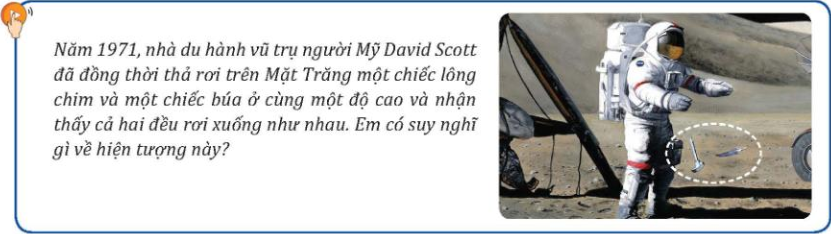
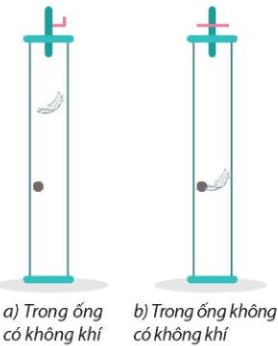
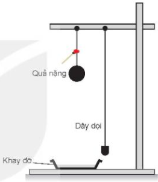
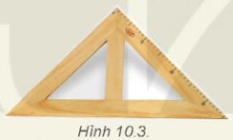

HOẠT ĐỘNG 1:
MỞ ĐẦU – TẠO TÌNH HUỐNG
HỌC TẬP
(7 phút)
|
a. Mục tiêu:
- Về kiến thức: Ôn tập sơ bộ về chuyển động biến đổi và kích thích sự tò mò, hứng thú tìm hiểu về hiện tượng các vật rơi trong thực tế thông qua câu chuyện lịch sử.
- Về năng lực số:
- 2.1.NC1a: Sử dụng thiết bị cá nhân để tương tác tham gia các hoạt động trực tuyến qua mã QR hoặc đường link.
- 1.1.NC1b: Khai thác thông tin số thông qua việc quan sát và phân tích video thí nghiệm khoa học lịch sử trên Internet.
- Về năng lực AI:
- NLc: Biết cách thiết lập câu lệnh (prompt) đóng vai để nhờ AI (ChatGPT/Gemini) giải thích nguyên nhân của một hiện tượng vật lí bất thường.
- NLa: Nhận thức được rằng AI cung cấp thông tin, nhưng HS phải là người đối chiếu câu trả lời đó với hình ảnh video quan sát được và kiến thức thực tế để khẳng định tính logic.
b. Nội dung:
- HS tham gia trò chơi tương tác (Quizizz/Kahoot) hoặc quan sát video thực tế về thí nghiệm của nhà du hành vũ trụ David Scott trên Mặt Trăng năm 1971.
- Thảo luận nhóm về hiện tượng: Tại sao trên Mặt Trăng chiếc búa và lông chim rơi xuống như nhau, trong khi trên Trái Đất chúng lại rơi khác nhau?
- Thử thách AI: Một nhóm HS được giao nhiệm vụ dùng trợ lý ảo AI để "giải mã" hiện tượng kỳ lạ này và báo cáo trước lớp.
c. Sản phẩm: Kết quả phản hồi của HS trên ứng dụng tương tác số hoặc phiếu ghi chép nhanh. HS nhận thức được vấn đề cần nghiên cứu: Yếu tố nào ảnh hưởng đến sự rơi nhanh hay chậm của các vật?
d. Tổ chức thực hiện:
Bước 1: GV chuyển giao nhiệm vụ học tập
- GV sử dụng PowerPoint trình chiếu video lịch sử: Nhà du hành vũ trụ David Scott đồng thời thả rơi một chiếc búa và một chiếc lông chim trên Mặt Trăng.
- Thử thách AI: GV yêu cầu Nhóm 1 mở AI và gõ câu lệnh (prompt): "Đóng vai một nhà khoa học vật lí, hãy giải thích ngắn gọn bằng ngôn ngữ dễ hiểu: Tại sao trên Mặt Trăng, chiếc búa nặng và chiếc lông chim nhẹ lại rơi chạm đất cùng một lúc?" (NLAI: NLc).
- GV cung cấp mã QR link Padlet hoặc Quizizz và giao nhiệm vụ: "Hãy quan sát kĩ video và đưa ra dự đoán/nhận xét của em về tốc độ rơi của hai vật này. Tại sao kết quả lại khác với kinh nghiệm thực tế của các em trên Trái Đất?"

Hình ảnh minh họa: Phi hành gia David Scott thả lông chim và búa trên Mặt Trăng (1971)
Bước 2: HS thực hiện nhiệm vụ học tập
- HS làm việc theo nhóm (4-6 HS), sử dụng điện thoại thông minh/máy tính bảng để quan sát lại đoạn video (nếu cần) và thảo luận.
- HS truy cập nền tảng số để gửi câu trả lời hoặc dự đoán của nhóm mình.
- Nhóm 1 nhận thử thách AI tương tác với Chatbot, đọc lướt câu trả lời để tìm từ khóa trọng tâm.
- GV theo dõi, hỗ trợ các nhóm gặp khó khăn về kết nối mạng hoặc thao tác trên thiết bị.
Bước 3: Báo cáo kết quả
- GV trình chiếu bảng tổng hợp các ý kiến trên màn hình chính (ví dụ giao diện Padlet).
- GV mời đại diện 1-2 nhóm có dự đoán thú vị nhất trình bày lí do.
- Các nhóm khác sử dụng tính năng bình luận trực tuyến hoặc phát biểu trực tiếp để bổ sung, phản biện.
- GV mời đại diện Nhóm 1 (nhóm dùng AI) đọc kết quả tra cứu. (Ví dụ AI trả lời: "Trên Trái Đất, chiếc lông chim bị lực cản không khí cản lại nên rơi chậm hơn chiếc búa. Nhưng trên Mặt Trăng là môi trường chân không, không có không khí và không có lực cản. Cả búa và lông chim chỉ chịu tác dụng duy nhất của lực hấp dẫn, do đó chúng rơi nhanh như nhau và chạm đất cùng lúc").
- Lớp cùng thảo luận, đối chiếu câu trả lời của AI với quan sát từ video để xác nhận tính logic (NLAI: NLa).
Bước 4: Đánh giá kết quả
- GV tổng kết, nhận xét về tính tích cực và kĩ năng khai thác học liệu số của các nhóm.
- GV chốt vấn đề và dẫn dắt vào bài: "Như vậy, nhờ AI và video lịch sử, chúng ta thấy rằng trong môi trường không khí trên Trái Đất, các vật rơi nhanh chậm khác nhau do lực cản. Nhưng trong môi trường chân không (như Mặt Trăng), khi không có lực cản, mọi vật rơi như nhau dưới tác dụng duy nhất của trọng lực. Chuyển động tuyệt đẹp đó gọi là Sự rơi tự do. Vậy sự rơi tự do có những đặc điểm và quy luật nào? Chúng ta sẽ cùng tìm hiểu qua BÀI 10: SỰ RƠI TỰ DO."
|
HOẠT ĐỘNG 2.1:
TÌM HIỂU VỀ SỰ RƠI
TRONG KHÔNG KHÍ
(15 phút)
|
a. Mục tiêu:
- Về kiến thức:
- Mô tả được sự rơi của các vật khác nhau trong không khí và nhận ra rằng trong môi trường này các vật rơi nhanh chậm khác nhau.
- Nêu được yếu tố ảnh hưởng đến sự rơi nhanh hay chậm của vật trong không khí là độ lớn của lực cản không khí so với trọng lực tác dụng lên vật.
- Về năng lực số:
- 2.1.NC1a: Sử dụng thành thạo điện thoại thông minh để quay video hoạt nghiệm (chế độ Slow-motion) nhằm quan sát chi tiết chuyển động.
- 1.2.NC1b: Tiến hành đánh giá và phân tích hình ảnh/video đã ghi hình để so sánh chính xác thời điểm chạm đất của các vật.
- Về năng lực AI: NLc (đặt prompt phù hợp để nhờ AI giải thích nguyên lí khí động học và lực cản không khí); NLa (thể hiện tư duy làm chủ công nghệ, dùng tư duy vật lí để tổng hợp và rút ra kết luận).
b. Nội dung: HS làm việc theo nhóm để tiến hành 3 thí nghiệm định tính:
- TN 1: Thả rơi một quả bóng và một chiếc lá.
- TN 2: Thả rơi hai tờ giấy giống nhau, một tờ vo tròn và một tờ để nguyên.
- TN 3: Thả rơi hai viên bi có cùng kích thước, một bằng sắt và một bằng thủy tinh.
Sử dụng thiết bị số để ghi lại quá trình rơi và thảo luận nhóm về nguyên nhân dẫn đến sự khác biệt. Thử thách AI: Một nhóm dùng AI để tìm hiểu tại sao tờ giấy vo tròn lại rơi nhanh hơn tờ giấy phẳng dù khối lượng bằng nhau.
c. Sản phẩm: Kết luận về sự rơi trong không khí:
I. Sự rơi trong không khí
- Sự rơi là chuyển động thường gặp.
- Sự rơi không chỉ phụ thuộc khối lượng của vật mà còn phụ thuộc vào lực cản của không khí.
- Lực cản càng nhỏ so với trọng lực tác dụng lên vật thì vật sẽ rơi càng nhanh và ngược lại.
d. Tổ chức thực hiện:
Bước 1: GV chuyển giao nhiệm vụ học tập
- GV đặt vấn đề: "Ta thường thấy viên bi rơi nhanh hơn chiếc lá. Liệu có phải cứ vật nặng hơn thì sẽ rơi nhanh hơn không?"
- GV chia nhóm và giao bộ dụng cụ: quả bóng, lá cây, giấy A4, bi sắt, bi thủy tinh.
- GV yêu cầu: "Các nhóm tiến hành 3 TN theo hướng dẫn. Sử dụng điện thoại quay video Slow-motion khoảnh khắc các vật chạm đất để làm bằng chứng thảo luận" (Tích hợp năng lực số).
- Thử thách NLAI: "Nhóm 1 hãy dùng AI gõ prompt: Đóng vai chuyên gia vật lí, giải thích tại sao 2 tờ giấy nặng bằng nhau nhưng tờ vo tròn lại rơi chạm đất trước tờ để phẳng?" (NLAI: NLc).
Bước 2: HS thực hiện nhiệm vụ học tập
- HS các nhóm lần lượt thực hiện TN1, TN2, TN3.
- Một thành viên phụ trách thả vật cùng độ cao, một thành viên dùng thiết bị số ghi hình.
- Nhóm thảo luận, xem lại video để so sánh thời gian rơi và phân tích đặc điểm bề mặt của các vật.
- Nhóm 1 tương tác với trợ lí ảo AI, đọc hiểu và rút ra từ khóa "lực cản không khí".
- GV theo dõi, hỗ trợ HS các kĩ thuật quay video hoạt nghiệm và đảm bảo an toàn thiết bị số.
Bước 3: Báo cáo kết quả hoạt động và thảo luận
- Đại diện nhóm trình bày kết quả (có thể trình chiếu đoạn video slow-motion ngắn vừa quay):
- TN1: Sự rơi của các vật có liên quan tới kích thước và khối lượng của vật.
- TN2: Sự rơi của vật có liên quan tới diện tích bề mặt vật tiếp xúc với không khí.
- TN3: Sự rơi của các vật có liên quan tới khối lượng của vật.
- ⇒ Kết luận: Các thí nghiệm trên cho thấy sự rơi nhanh hay chậm của vật phụ thuộc vào độ lớn của lực cản không khí tác dụng lên vật. Lực cản càng nhỏ so với trọng lực tác dụng lên vật thì vật sẽ rơi càng nhanh và ngược lại.
- Tại sao TN1 quả bóng rơi nhanh hơn chiếc lá? → HS: Vì chiếc lá có diện tích bề mặt lớn hơn nên bị lực cản không khí nhiều hơn, rơi chậm hơn.
- Trong TN2, tại sao hai tờ giấy giống nhau, nhưng tờ bị vo lại rơi nhanh hơn? → HS: Vì tờ giấy vo tròn đã thu hẹp được diện tích bề mặt tiếp xúc với không khí, nghĩa là lực cản không khí tác dụng lên nó nhỏ hơn nên rơi nhanh hơn.
- Trong TN3, tại sao hai viên bi rơi nhanh như nhau trong khi khối lượng hai viên bi khác nhau? → HS: Vì bề mặt tiếp xúc của bi thủy tinh và bi sắt là như nhau nên chịu lực cản của không khí là như nhau, nên hai viên bi rơi nhanh như nhau.
- Đại diện Nhóm 1 báo cáo kết quả từ AI cho TN2: "Thưa thầy/cô, AI giải thích rằng tờ giấy vo tròn rơi nhanh hơn do nó đã thu hẹp diện tích bề mặt tiếp xúc với không khí, nghĩa là lực cản không khí tác dụng lên nó nhỏ hơn rất nhiều so với tờ giấy phẳng."
Bước 4: Đánh giá kết quả
- GV tổng kết: Nguyên nhân các vật rơi nhanh chậm khác nhau trong không khí là do lực cản không khí.
- Đánh giá NLS & NLAI: GV biểu dương kĩ năng sử dụng tính năng quay chậm của thiết bị số rất sáng tạo của HS để bắt trọn những khoảnh khắc vật lí diễn ra trong tích tắc. Đồng thời khen ngợi khả năng khai thác AI để tìm ra lời giải thích sắc bén về mặt khí động học.
- GV nhấn mạnh: Không phải khối lượng mà chính là tỉ lệ giữa lực cản và trọng lực mới quyết định tốc độ rơi trong không khí.
|
HOẠT ĐỘNG 2.2:
TÌM HIỂU VỀ SỰ RƠI TỰ DO
(15 phút)
|
a. Mục tiêu:
- Về kiến thức:
- Phát biểu được định nghĩa sự rơi tự do là sự rơi chỉ dưới tác dụng của trọng lực.
- Trình bày được các đặc điểm của chuyển động rơi tự do về phương (thẳng đứng), chiều (từ trên xuống) và tính chất (nhanh dần đều).
- Nêu được đặc điểm gia tốc rơi tự do \(g\) và viết đúng các công thức tính vận tốc (\(v = gt\)), quãng đường (\(s = \frac{1}{2}gt^2\)).
- Về năng lực số:
- 5.3.NC1a: Sử dụng phần mềm bảng tính để thiết lập công thức tính toán tự động gia tốc từ các giá trị \(s\) và \(t\) nhằm chứng minh tính chất chuyển động.
- 3.3.NC1a: Thực thi đạo đức số thông qua thái độ trung thực khi báo cáo số liệu và trích dẫn đúng nguồn học liệu số đã sử dụng.
- Về năng lực AI:
- NLa: Nhận thức được rằng phần mềm tính toán có thể tự động cho ra kết quả con số rất nhanh, nhưng con người phải là chủ thể đánh giá tính hợp lí và dùng tư duy vật lí để kết luận đó là chuyển động nhanh dần đều.
- NLc: Biết cách đặt câu lệnh (prompt) phù hợp để nhờ chatbot AI đóng vai trò chuyên gia Vật lí giải thích hiện tượng gia tốc trọng trường g thay đổi theo vĩ độ trên Trái Đất.
b. Nội dung:
- HS thảo luận nhóm để phân tích khái niệm sự rơi tự do từ tình huống thực tế (vật rơi trong không khí khi lực cản không đáng kể).
- Sử dụng thiết bị số cá nhân truy cập bảng dữ liệu số hóa (Bảng 10.1 SGK) để tính toán gia tốc rơi tự do tại các thời điểm khác nhau.
- Xây dựng hệ thống công thức của sự rơi tự do dựa trên nền tảng của chuyển động thẳng biến đổi đều.
- Thử thách AI: Dùng công cụ AI để tìm hiểu tại sao gia tốc g lại không giống nhau ở mọi nơi trên Trái Đất.
c. Sản phẩm:
II. Sự rơi tự do
1. Sự rơi tự do: là sự rơi chỉ dưới tác dụng của trọng lực.
2. Đặc điểm của chuyển động rơi tự do:
- a) Phương và chiều: Phương thẳng đứng (trùng phương của trọng lực); chiều từ trên xuống.
- b) Tính chất: Là chuyển động thẳng nhanh dần đều.
- c) Gia tốc rơi tự do: Tại một nơi nhất định trên Trái Đất, mọi vật rơi tự do với cùng một gia tốc \(g\). Gia tốc rơi tự do ở các nơi khác nhau trên Trái Đất thì khác nhau.
3. Công thức rơi tự do: (chuyển động nhanh dần đều không vận tốc đầu)
- Gia tốc: \(a = g = \text{hằng số}\).
- Vận tốc tức thời: \(v = gt\).
- Độ dịch chuyển, quãng đường đi được tại thời điểm \(t\):
\[ d = s = \frac{1}{2}gt^2 = \frac{v^2}{2g} \]
d. Tổ chức thực hiện:
Bước 1: GV chuyển giao nhiệm vụ học tập
- GV nêu định nghĩa: "Sự rơi tự do là sự rơi chỉ dưới tác dụng của trọng lực".
- GV đặt vấn đề: "Nếu vật rơi trong không khí nhưng lực cản rất nhỏ so với trọng lượng, ta có thể coi là rơi tự do không? Ví dụ quả tạ rơi?"
- GV gửi link Google Sheets chứa dữ liệu quãng đường và thời gian (Bảng 10.1) và yêu cầu: "Các nhóm hãy tính gia tốc a tại mỗi thời điểm bằng phần mềm bảng tính" (Tích hợp năng lực số).
- Thử thách AI: "Một nhóm hãy dùng Chatbot AI gõ prompt: Đóng vai nhà Địa vật lí, hãy giải thích ngắn gọn tại sao gia tốc trọng trường g ở vùng xích đạo lại nhỏ hơn ở hai cực của Trái Đất?" (NLAI: NLc).
Bước 2: HS thực hiện nhiệm vụ học tập
- HS thảo luận nhóm, xác định các trường hợp được coi là rơi tự do.
- Tích hợp số: HS nhập công thức =2*B2/(A2^2) (với B là quãng đường, A là thời gian) vào bảng tính để tìm gia tốc a.
- Tư duy AI (NLa): HS quan sát kết quả bảng tính nhả ra các con số xấp xỉ 9,8 m/s²; 9,85 m/s²... HS phải dùng tư duy vật lí để lập luận: Mặc dù quãng đường rơi sau mỗi 0,1s ngày càng tăng, nhưng gia tốc tính được luôn xấp xỉ một hằng số. Từ đó khẳng định đây là chuyển động nhanh dần đều.
- GV hướng dẫn HS cách sử dụng dây dọi để kiểm tra phương thẳng đứng của sự rơi:
- Yêu cầu HS thực hiện thí nghiệm 10.2 để kiểm tra.
- Dựa vào đặc điểm về hướng của sự rơi tự do, hãy tìm cách kiểm tra bức tường trong lớp có phải thẳng đứng hay không.
- Sử dụng eke và dây dọi để kiểm tra xem nền lớp học có phẳng hay không.
- GV trình bày về việc chứng minh sự rơi tự do là chuyển động nhanh dần đều bằng phương pháp chụp ảnh hoạt nghiệm: chụp liên tiếp vật chuyển động sau những khoảng thời gian bằng nhau để đo được quãng đường đi được trong thời gian đó.
- Yêu cầu HS dựa vào bảng số liệu 10.1 để chứng tỏ chuyển động rơi tự do là nhanh dần đều và tính gia tốc của chuyển động rơi tự do đó.
- a) Từ giây thứ 0,1 đến 0,2, vật rơi được: \(0,197 - 0,049 = 0,148\) m
Từ giây thứ 0,2 đến 0,3, vật rơi được: \(0,441 - 0,197 = 0,244\) m
Từ giây thứ 0,3 đến 0,4, vật rơi được: \(0,785 - 0,441 = 0,344\) m
Như vậy, sau cùng 1 khoảng là 0,1 giây như nhau nhưng vật rơi được những khoảng khác nhau, càng về sau thì rơi càng nhanh hơn.
- b) Gia tốc của sự rơi tự do. Ta dựa vào công thức: \(s = \frac{1}{2}at^2 \Rightarrow a = \frac{2s}{t^2}\). Như vậy:
- Gia tốc tại 0,1 giây là: \(a = \frac{2 \cdot 0,049}{0,1^2} = 9,8\) (m/s²)
- Gia tốc tại 0,2 giây là: \(a = \frac{2 \cdot 0,197}{0,2^2} = 9,85\) (m/s²)
- Gia tốc tại 0,3 giây là: \(a = \frac{2 \cdot 0,441}{0,3^2} = 9,8\) (m/s²)
- Gia tốc tại 0,4 giây là: \(a = \frac{2 \cdot 0,785}{0,4^2} = 9,8125\) (m/s²)
- Gia tốc tại 0,5 giây là: \(a = \frac{2 \cdot 1,227}{0,5^2} = 9,824\) (m/s²)
- GV dẫn dắt đến đặc điểm của gia tốc rơi tự do: ở cùng một nơi trên Trái Đất mọi vật có gia tốc rơi tự do giống nhau.
- Yêu cầu HS trả lời các câu hỏi: Tại sao độ dịch chuyển và quãng đường đi được trong sự rơi tự do có cùng độ lớn? Hãy nêu cách đo gần đúng độ sâu của một cái giếng mỏ cạn. Coi vận tốc truyền âm trong không khí là không đổi và đã biết?
- HS trả lời: Vì sự rơi tự do là chuyển động thẳng, không đổi chiều và vật rơi luôn hướng về mặt đất. Thả một hòn đá xuống giếng và đo thời gian từ lúc thả đến khi nghe thấy tiếng rơi bõm của hòn đá. Khi đó ta tính được độ sâu của giếng là: \(d = \frac{1}{2}at^2\) với \(g = 9,8\) m/s².
- GV yêu cầu HS thảo luận nhóm và hoàn thiện phiếu học tập số 2.
- HS thảo luận và báo cáo kết quả: đại diện 1 nhóm trình bày, học sinh các nhóm khác thảo luận, nhận xét, bổ sung và sửa lỗi về câu trả lời của nhóm đại diện.
Bước 3: Báo cáo kết quả hoạt động và thảo luận
- Đại diện nhóm trình bày file bảng tính đã xử lí, chứng minh tính chất nhanh dần đều và gia tốc không đổi.
- HS thảo luận: "Tại sao độ dịch chuyển d và quãng đường s trong rơi tự do lại có cùng độ lớn?" (Đáp án: Do chuyển động thẳng, không đổi chiều).
- Báo cáo Thử thách AI: Đại diện nhóm đọc kết quả: "AI giải thích do Trái Đất phình ra ở xích đạo và dẹt ở hai cực, cộng thêm lực li tâm do sự tự quay, nên vật ở xích đạo chịu gia tốc trọng trường nhỏ hơn ở hai cực."
- Các nhóm chia sẻ kết quả và phản biện qua các công cụ trực tuyến hoặc phát biểu trực tiếp.
ĐÁP PHIẾU HỌC TẬP SỐ 2
Bước 4: Đánh giá kết quả
- GV chuẩn hóa kiến thức: Rơi tự do là chuyển động thẳng nhanh dần đều.
- GV nhấn mạnh: Gia tốc \(g\) tại một nơi nhất định là như nhau cho mọi vật, nhưng sẽ thay đổi theo vĩ độ trên Trái Đất.
- GV đánh giá năng lực xử lí số liệu chính xác và thái độ nghiêm túc của HS khi sử dụng thiết bị số.
- Đánh giá NLS & NLAI: GV biểu dương kĩ năng xử lí số liệu chính xác trên bảng tính điện tử của HS, đồng thời khéo ngoại tư duy làm chủ công nghệ khi các em không chỉ đọc kết quả của máy tính mà biết phân tích ý nghĩa vật lí cốt lõi (Gia tốc không đổi → Chuyển động biến đổi đều) (NLAI: NLa).

Hình 10.1. Thí nghiệm về sự rơi tự do

Hình 10.2. Thí nghiệm kiểm tra phương và chiều của sự rơi tự do

Hình 10.3. Eke tam giác vuông cân
|
HOẠT ĐỘNG 3:
LUYỆN TẬP – TRÒ CHƠI
"THỬ THÁCH RƠI TỰ DO"
(10 phút)
|
a. Mục tiêu:
- Về kiến thức: Hệ thống hóa và củng cố các đặc điểm của sự rơi tự do (phương thẳng đứng, chiều từ trên xuống, là chuyển động thẳng nhanh dần đều) và các công thức liên quan (\(v = gt\); \(s = d = \frac{1}{2}gt^2\)).
- Về năng lực số:
- 2.1.NC1a: Sử dụng thiết bị cá nhân để tham gia các trò chơi học tập tương tác trực tuyến (Quizizz, Kahoot).
- 2.2.NC1a & 2.5.NC1b: Trao đổi nhanh trong nhóm và phản hồi kết quả thông qua các nền tảng trực tuyến một cách phù hợp.
- Về năng lực AI:
- NLa: Thể hiện tư duy làm chủ: nhận thức được máy tính hay công cụ số chỉ hỗ trợ tính toán nhanh, con người mới là chủ thể tư duy vật lí để thiết lập đúng hệ phương trình tỉ lệ (ví dụ hiểu \(h\) tỉ lệ thuận với bình phương thời gian \(t^2\)).
- NLb (Đạo đức AI): Tuân thủ tính liêm chính học thuật; khách quan, trung thực trong việc báo cáo kết quả thi đấu, không sử dụng các công cụ gian lận hay tra cứu đáp án có sẵn trên mạng trong thời gian đếm ngược của trò chơi.
- Về phẩm chất: Rèn luyện tính trung thực và khách quan trong việc báo cáo kết quả bài làm.
b. Nội dung: HS tham gia trò chơi tương tác số mang tên "Thử thách rơi tự do" trên nền tảng Quizizz hoặc Kahoot để ôn tập lí thuyết; thực hiện nhiệm vụ nhóm hoàn thành Phiếu học tập số 3 (10 câu hỏi trắc nghiệm khách quan).
c. Sản phẩm: Kiến thức được hệ thống và hiểu sâu hơn các định nghĩa:
- Chuyển động rơi chỉ chịu tác dụng của trọng lực gọi là rơi tự do.
- Chuyển động rơi tự do là chuyển động thẳng nhanh dần đều theo phương thẳng đứng, chiều hướng xuống dưới.
- Tại một nơi nhất định trên Trái Đất, mọi vật rơi tự do với cùng một gia tốc \(g\). Gia tốc rơi tự do ở các nơi khác nhau trên Trái Đất thì khác nhau.
- Gia tốc \(a = g = \text{hằng số}\). Vận tốc tức thời: \(v = gt\). Độ dịch chuyển, quãng đường đi được tại thời điểm \(t\): \(d = s = \frac{1}{2}gt^2 = \frac{v^2}{2g}\).
d. Tổ chức thực hiện:
Bước 1: GV chuyển giao nhiệm vụ học tập
- GV sử dụng PowerPoint hệ thống nhanh các công thức cốt lõi của bài: \(v = gt\); \(s = \frac{1}{2}gt^2\).
- GV cung cấp mã PIN/mã QR để các nhóm truy cập vào trò chơi trực tuyến chứa các câu hỏi từ Phiếu học tập số 3.
- GV nêu luật chơi: "Mỗi nhóm sử dụng 1 thiết bị số để thực hiện thử thách tính toán nhanh trong 10 câu hỏi. Đòi hỏi tốc độ và sự chính xác. Nghiêm cấm tra cứu đáp án bằng AI hoặc Google trong lúc thi đấu để đảm bảo sự công bằng" (NLAI: NLb).
Bước 2: HS thực hiện nhiệm vụ học tập
- HS làm việc theo nhóm, cùng thảo luận nhanh để chọn đáp án đúng trên ứng dụng số (thời gian 45-60 giây cho mỗi câu).
- HS sử dụng máy tính khoa học trên điện thoại hoặc phần mềm bảng tính để giải quyết các câu hỏi tính toán độ cao tháp (Câu 4) hoặc tỉ số vận tốc (Câu 7).
- GV theo dõi tiến độ và tỉ lệ trả lời đúng của cả lớp qua màn hình điều khiển (Teacher Dashboard) để nhận diện các kiến thức HS còn lúng túng.
Bước 3: Báo cáo kết quả hoạt động và thảo luận
- GV trình chiếu bảng tổng kết điểm số của các nhóm lên màn hình chính.
- GV mời đại diện nhóm có kết quả tốt nhất giải thích cách lập luận cho các câu hỏi khó (ví dụ: Câu 6 về tỉ số độ cao dựa trên thời gian rơi).
- Các nhóm khác sử dụng thiết bị số để gửi nhận xét hoặc đặt câu hỏi phản biện cho nhóm bạn thông qua phần bình luận trực tuyến.
Bước 4: Đánh giá kết quả
- GV tổng kết, chuẩn hóa toàn bộ đáp án của Phiếu học tập số 3.
- Đánh giá NLAI: GV khen ngợi tư duy làm chủ toán học của HS (NLa): "Công cụ số bấm ra kết quả là 4 hay 3 rất nhanh, nhưng bộ não của các em mới là nơi thiết lập đúng tỉ lệ thuận nghịch của các đại lượng vật lí."
- Nhấn mạnh lưu ý: Gia tốc rơi tự do \(g\) không đổi về hướng và độ lớn tại một nơi nhất định, là đặc điểm quan trọng nhất của chuyển động này.
|
HOẠT ĐỘNG 4:
VẬN DỤNG
(3 phút)
|
a. Mục tiêu:
- Về kiến thức: Giúp HS tự vận dụng kiến thức về sự rơi tự do vào các tình huống thực tế đơn giản như tính toán thời gian rơi, vận tốc chạm đất hoặc đo đạc độ cao. Biết cách xác định phương thẳng đứng và phương nằm ngang trong đời sống bằng các dụng cụ tự chế.
- Về năng lực số:
- 1.1.NC1b: Tra cứu dữ liệu số về gia tốc trọng trường tại các địa điểm khác nhau trên Trái Đất hoặc các thiên thể qua website khoa học.
- 3.1.NC1a: Thiết kế sản phẩm học tập số (infographic, video clip ngắn) mô tả quá trình thực hiện nhiệm vụ đo đạc thực tế.
- 5.3.NC1a: Áp dụng các phần mềm/ứng dụng phân tích video chuyển động trên điện thoại để thu thập số liệu.
- 3.3.NC1a & 4.2.NC1a: Ý thức thực thi bản quyền học liệu số và bảo vệ dữ liệu cá nhân khi tương tác, chia sẻ kết quả trên không gian mạng.
- Về năng lực AI (NLAI):
- NLa: Nhận thức được rằng phần mềm hoặc AI có thể tính ra gia tốc \(g = 9,6\) m/s², nhưng con người phải phân tích được nguyên nhân gây ra sai số (do lực cản không khí tác dụng lên vật ném) để kết luận tính hợp lí của kết quả.
- NLb: Thể hiện tính liêm chính học thuật, khách quan và trung thực khi báo cáo số liệu; tự giác khai báo minh bạch nếu có sử dụng công cụ AI (ChatGPT/Gemini) hỗ trợ lên ý tưởng hoặc viết kịch bản báo cáo.
- NLc: Biết cách thiết lập câu lệnh (prompt) đóng vai trò để nhờ AI hướng dẫn cách giảm thiểu sai số khi đo thời gian rơi tự do bằng điện thoại.
b. Nội dung: HS thực hiện các nhiệm vụ sau tại nhà (theo nhóm hoặc cá nhân):
- Thử thách "Kiến trúc sư đo đạc": Hãy đề xuất phương án và tiến hành đo gần đúng độ sâu của một cái giếng cạn hoặc độ cao của một ban công bằng cách sử dụng một viên đá và ứng dụng đồng hồ bấm giây trên điện thoại.
- Khám phá số: Tra cứu Internet để giải thích tại sao gia tốc rơi tự do lại thay đổi theo vĩ độ. Sưu tầm hình ảnh/video về các vật rơi trong môi trường không trọng lực (trạm ISS).
- Chuẩn bị bài mới: Tìm hiểu và cài đặt thử các phần mềm/ứng dụng phân tích video chuyển động (như Tracker hoặc các app đo gia tốc rơi) để chuẩn bị cho "Bài 11: Thực hành đo gia tốc rơi tự do".
c. Sản phẩm:
- Bài làm chi tiết trong vở ghi cá nhân.
- Sản phẩm số: File trình chiếu (PowerPoint/Canva), Poster điện tử hoặc link video thực hiện thí nghiệm đo độ cao nộp qua link Google Drive hoặc nhóm Zalo lớp.
- Nhật ký Đạo đức số & AI: Khung trích dẫn ở cuối sản phẩm ghi rõ nguồn tài liệu tham khảo và dòng chữ: "Báo cáo có sự hỗ trợ của AI trong việc lên ý tưởng cấu trúc" (nếu có sử dụng).
d. Tổ chức thực hiện:
Bước 1: GV chuyển giao nhiệm vụ học tập
- GV chuyển giao nhiệm vụ qua slide cuối tiết học và gửi tệp hướng dẫn chi tiết (kèm link các nguồn học liệu số uy tín) vào nhóm lớp trực tuyến.
- GV nhắc nhở HS về các tiêu chí đánh giá sản phẩm số và yêu cầu trích dẫn nguồn hình ảnh, tài liệu tra cứu.
- Quy định Đạo đức số & AI (Mã 3.3.NC1a, NLAI: NLb): GV dặn dò: "Khi quay video tại nhà, các em chú ý không để lộ thông tin nhạy cảm (như địa chỉ nhà chi tiết) để bảo vệ dữ liệu cá nhân. Các em được phép dùng AI để hỏi cách xử lí sai số, nhưng phải tóm tắt lại bằng ý hiểu của mình và ghi chú rõ ràng trên sản phẩm."
Bước 2: HS thực hiện nhiệm vụ học tập
- HS thực hiện nhiệm vụ theo cá nhân hoặc nhóm bạn cùng khu phố ở nhà.
- Nhóm chọn Dự án 2 có thể tương tác với AI (NLAI: NLc) bằng prompt: "Đóng vai một kĩ sư phòng thí nghiệm vật lí, hãy hướng dẫn tôi 3 mẹo để quay video vật rơi tự do bằng điện thoại sao cho phần mềm Tracker có thể phân tích chính xác nhất (ví dụ: về ánh sáng, góc quay, độ tương phản của vật)."
- HS khai thác các học liệu số và sử dụng smartphone để thu thập số liệu.
- GV đóng vai trò cố vấn, hỗ trợ giải đáp thắc mắc cho HS thông qua các kênh online như Zalo, Facebook nhóm lớp.
Bước 3: Báo cáo kết quả hoạt động và thảo luận
- Các nhóm nộp sản phẩm số qua link tổng hợp trước buổi học kế tiếp.
- Vào đầu tiết học sau, GV chọn 2-3 sản phẩm xuất sắc nhất (ví dụ: video đo độ cao chính xác hoặc infographic giải thích về g sáng tạo) để giới thiệu trước lớp.
- HS các nhóm khác nhận xét, phản biện và chấm chéo sản phẩm dựa trên tiêu chí nội dung vật lí và tính sáng tạo số.
- Các nhóm khác truy cập vào không gian số của lớp để xem, bình duyệt chéo (Peer-review) và phản biện: "Tại sao gia tốc nhóm bạn tính ra chỉ có 9,4 m/s²?" → HS vận dụng tư duy vật lí (NLAI: NLa) để giải thích sự ảnh hưởng của lực cản không khí thực tế.
Bước 4: Đánh giá kết quả
- GV tổng kết, nhận xét về mức độ vận dụng kiến thức sự rơi tự do và kĩ năng ứng dụng công nghệ số của HS.
- GV chuẩn hóa lại cách xác định phương thẳng đứng và phương nằm ngang trong thực tế.
- Nhắc nhở HS chuẩn bị đầy đủ thiết bị số cho bài thực hành ở tiết tiếp theo.
|